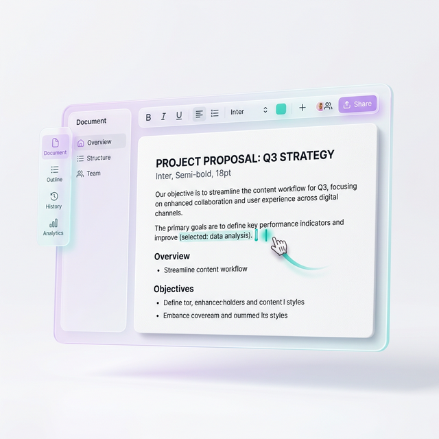

How to automatically redact sensitive information from PDFs

Stop Leaking Secrets: How to Automatically Redact Sensitive Information from PDFs
Imagine sharing an important business report, only to discover you left a client's private phone number visible. Even worse, imagine drawing a black box over a social security number, thinking it is safe, but finding out someone can easily copy-paste the text hidden underneath. Manual redaction mistakes destroy reputations and result in heavy legal fines.
Today, we handle hundreds of digital documents. Doing this manually wastes time and opens the door to human error. You need a reliable, automated way to find and strip sensitive data. Let's explore how automated redaction works, why manual efforts fail, and how you can protect your data in seconds.
Many people believe that covering text with a black rectangle secures a PDF. It does not. Applying a visual layer over text leaves the underlying code completely intact. Anyone with basic tech skills can copy the text from the document and paste it into a plain text editor to reveal your secrets.
Sometimes, PDF viewers fail to render the black box, displaying the original data instead. Other times, the file's metadata contains the exact keywords you tried to hide. To make matters worse, search engines can index these supposedly hidden words. True redaction permanently deletes the text, pixel data, and metadata from the document structure. It does not just paint over them. This is where automation steps in to save you from costly data leaks.
Automated systems use artificial intelligence and optical character recognition (OCR) to read your PDFs like a human would. Instead of searching page by page, you can instruct an algorithm to scan the document instantly. The technology searches for specific patterns. It instantly identifies Social Security numbers, credit card details, email addresses, and physical locations. You no longer have to squint at tiny print on page 47 of a massive contract.
For legal teams, this tech is a lifesaver. You can audit legal agreements for hidden risks while simultaneously wiping out confidential personal information. Automation works continuously, reducing human fatigue and streamlining your daily workflow.
Modern tools do not rely on simple word-matching alone. They understand context. An AI tool knows the difference between the word "Apple" referring to the company and "apple" referring to the fruit. This semantic understanding ensures you only redact the exact sensitive entities you want to hide, avoiding over-redaction.
First, the software converts scanned images into readable text. Next, natural language processing (NLP) models tag names, dates, amounts, and organizations. Once identified, the tool replaces the target text with solid black bars and deletes the underlying data forever. The metadata also gets scrubbed clean, removing all traces of the sensitive information from the file’s history. You can securely black out text in PDF files automatically with just a few clicks.
How do you implement this in your daily routine? The process is surprisingly simple when you use the right tool. First, you upload your document to a secure processing platform. If the PDF is a scan of a printed paper, the tool runs OCR automatically to make the text searchable.
Second, you select your redaction parameters. You can choose pre-built templates for personally identifiable information (PII) like phone numbers, tax IDs, and financial accounts. Alternatively, you can type in custom keywords, like a specific project codename. Third, the software highlights all matching instances. You review the suggested redactions in a preview pane. With one final click, the tool permanently burns these redactions into the PDF, creating a brand-new, clean file ready for distribution.
Human eyes get tired. After reading fifty pages of legal jargon, your brain naturally starts to skim. You might skip a crucial line or miss a repeated name in the footnotes. Computers do not get tired. An automated script treats page one thousand with the exact same focus as page one. It guarantees consistency across hundreds of files simultaneously.
This speed translates directly into cost savings. Instead of spending hours manually editing documents, your team can focus on high-value tasks. You protect your company's proprietary data, comply with privacy laws like GDPR, and maintain the trust of your clients.
Even with automated tools, practicing good document hygiene ensures absolute safety. Always keep a backup of your original, unredacted PDF in a secure, encrypted storage location. Once you apply permanent redactions, you cannot reverse the process.
Double-check your final output. Open the newly redacted PDF, use the search function (Ctrl+F or Cmd+F), and type in the sensitive keywords you intended to remove. If the search turns up zero results, your redaction was successful. Finally, inspect the file properties and metadata. Ensure your document creation date, author name, and previous edit history do not leak clues about the redacted content. Combining automatic redacting with a clean workflow keeps your communications bulletproof.
Securing your data does not have to be a slow, painful chore. Automated PDF redaction saves your business time, eliminates human error, and prevents devastating data breaches. It transforms a complex security requirement into a simple, stress-free task.
Are you ready to secure your sensitive files? Try PDFjin’s suite of intelligent tools today. Beyond powerful security features, you can convert, merge, edit, and compress your documents instantly. Protect your reputation and streamline your document workflow today with PDFjin.